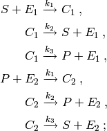
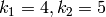
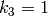

dual_enzymatic : coupled enzymatic reactions¶
Overview¶
This model describes a system of coupled enzymatic reactions. The reactions composing this system are as follows:

The rate constants are  and .
The initial species counts are 50 copies of  , 20 copies of
, 20 copies of  ,
and 10 copies of
,
and 10 copies of  . The other species counts are initially zero.
. The other species counts are initially zero.
The first three reactions in the system describe an
enzymatic reaction transforming the species into the species
 . The second three reactions describe another enzymatic reaction
transforming the species back into .
. The second three reactions describe another enzymatic reaction
transforming the species back into .
Running the model¶
This model is defined by the module cmepy.model.dual_enzymatic. The source code for this model is listed below.
To try out this model, open the Python interpreter and enter:
>>> from cmepy.models import dual_enzymatic
>>> dual_enzymatic.main()
This will solve the system up to  , then display plots of the
standard deviation and expected value of the species counts, as seen below.
, then display plots of the
standard deviation and expected value of the species counts, as seen below.


Source code¶
"""
Example system with two enzymatic reactions.
System :
S + E1 <--> C1 --> P + E1
P + E2 <--> C2 --> S + E2
"""
from cmepy import model
def default_initial_copies():
"""
Returns default initial copies of species S, E1, E2 for the model.
"""
return {
'S' : 50,
'E1' : 20,
'E2' : 10,
}
def gen_states(initial_copies = None):
"""
Returns generator yielding all reachable states in state space.
NB state space format: (c2_copies, c1_copies, s_copies)
"""
if initial_copies is None:
initial_copies = default_initial_copies()
s_0 = initial_copies['S']
e1_0 = initial_copies['E1']
e2_0 = initial_copies['E2']
for s in xrange(s_0+1):
for c1 in xrange(min(e1_0, s_0 - s)+1):
for c2 in xrange(min(e2_0, s_0 - s - c1)+1):
yield (c2, c1, s)
return
def create_model(initial_copies = None):
"""
Returns mapping storing model.
NB state space format: (c2_copies, c1_copies, s_copies)
"""
if initial_copies is None:
initial_copies = default_initial_copies()
s_copies = lambda *x : x[2]
c1_copies = lambda *x : x[1]
c2_copies = lambda *x : x[0]
p_copies = lambda *x : initial_copies['S'] - x[0] - x[1] - x[2]
e1_copies = lambda *x : initial_copies['E1'] - x[1]
e2_copies = lambda *x : initial_copies['E2'] - x[0]
return model.create(
name = 'dual enzymatic reactions',
reactions = (
'S+E1 -> C1',
'C1 -> S+E1',
'C1 -> P+E1',
'P+E2 -> C2',
'C2 -> P+E2',
'C2 -> S+E2',
),
propensities = (
lambda *x : 4.0*s_copies(*x)*e1_copies(*x),
lambda *x : 5.0*c1_copies(*x),
lambda *x : 1.0*c1_copies(*x),
lambda *x : 4.0*p_copies(*x)*e2_copies(*x),
lambda *x : 5.0*c2_copies(*x),
lambda *x : 1.0*c2_copies(*x),
),
transitions = (
(0, 1, -1),
(0, -1, 1),
(0, -1, 0),
(1, 0, 0),
(-1, 0, 0),
(-1, 0, 1),
),
species = (
'S',
'C1',
'C2',
'P',
'E1',
'E2',
),
species_counts = (
s_copies,
c1_copies,
c2_copies,
p_copies,
e1_copies,
e2_copies,
),
initial_state = (0, 0, initial_copies['S'])
)
def main():
"""
Solve dual enzymatic reaction system
"""
import numpy
import cmepy.solver
import cmepy.recorder
import cmepy.domain
model = create_model()
solver = cmepy.solver.create(
model = model,
sink = True,
domain_states = cmepy.domain.from_iter(gen_states()),
)
recorder = cmepy.recorder.create(
(model.species, model.species_counts)
)
t_final = 10.0
steps_per_time = 25
time_steps = numpy.linspace(0.0, t_final, int(steps_per_time*t_final) + 1)
print 'solving dual enzymatic system to t_final = %.2f' % t_final
for step, t in enumerate(time_steps):
print 't = %.2f' % t
solver.step(t)
# record results every second, not every step
if step % steps_per_time == 0:
print 'recording solution'
p, p_sink = solver.y
recorder.write(t, p)
cmepy.recorder.display_plots(recorder)